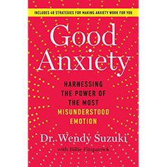
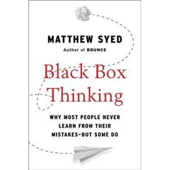
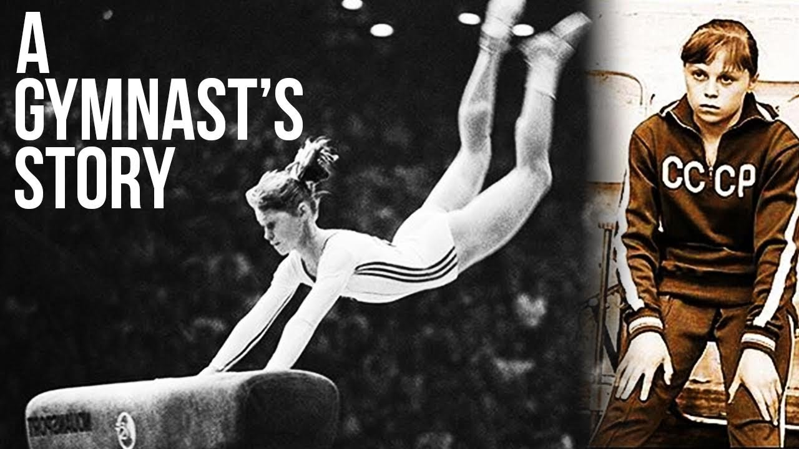

Módulo 04 / Apartado 3 de 5
Los que no se pueden permitir un fallo
Portaaviones, centrales nucleares y torres de control: qué hacen distinto y por qué se puede copiar. Los cinco principios de alta fiabilidad, y su versión individual, que empieza con Joaquín Reyes haciendo de Steve Jobs.
El problema que nadie te plantea así
Hay organizaciones que hacen todos los días cosas que deberían salir mal a menudo y no salen mal casi nunca. Un portaaviones aterrizando aviones de noche en una pista de cien metros que se mueve. Una central nuclear. Una torre de control con cuatrocientos aviones a la vez. Un quirófano de trasplantes.
No son organizaciones especialmente ricas, ni con especialmente buena gente, ni con tecnología mágica. Y la pregunta que se hicieron unos investigadores de Berkeley a finales de los ochenta es la buena: ¿qué hacen distinto?
HRO son las siglas de High Reliability Organization, organización de alta fiabilidad. El término y el programa de investigación salen de un grupo de la Universidad de California en Berkeley —Todd LaPorte, Gene Rochlin, Karlene Roberts— que a finales de los ochenta se metió literalmente dentro de tres sitios: la cubierta de vuelo de un portaaviones, la central nuclear de Diablo Canyon y el control aéreo estadounidense.
La idea que estaban contestando era la contraria, que también tiene su nombre: «accidentes normales», de Charles Perrow (1984). Perrow decía que en sistemas muy acoplados y muy complejos los accidentes son inevitables, no excepcionales. Los de Berkeley fueron a mirar sitios que llevaban décadas desmintiéndolo.
Y lo relevante para nosotros: una HRO no es una organización que no se equivoca. Es una organización que detecta el error muy pronto y lo contiene. La diferencia es todo.
Quien sistematizó el hallazgo en algo que se puede usar fue, otra vez, Karl Weick, esta vez con Kathleen Sutcliffe. Y salieron cinco principios.
 El libro de esto
Managing the Unexpected: Resilient Performance in an Age of Uncertainty
El libro de esto
Managing the Unexpected: Resilient Performance in an Age of Uncertainty
El manual de campo de la alta fiabilidad. Es corto, va al grano y tiene cuestionarios de autoevaluación por principio, lo cual lo hace raro entre los libros de Weick. Su concepto central es el mindful organizing: no confiar en los planes, sino mantener a todo el mundo mirando lo que de verdad está pasando — Karl E. Weick y Kathleen M. Sutcliffe · 2001 (3ª ed. 2015)
Los cinco principios
Los tres primeros sirven para anticipar: ver venir el problema. Los dos últimos para contener: sobrevivir al que no viste. Casi todas las organizaciones normales suspenden en los cinco, y suspenden en el primero de una manera muy característica.
Merece la pena pararse en el primero, porque es el más contraintuitivo. La racha buena es el momento de peligro. Cuando llevas dos años sin un incidente, no tienes material con el que calibrar si sigues estando atento, y el sistema empieza a interpretar la ausencia de fallo como prueba de que va bien. Las HRO lo compensan persiguiendo activamente los casi: el conato, la anomalía, el «esto no debería haber pasado aunque no pasó nada».
La ingeniería te prepara para cien problemas distintos. Pero siempre llega el 101.
La versión individual: la escaleta y el 101
Todo lo anterior es organizativo. La turra que corresponde a esto va de lo mismo en una sola persona, y la escena que la abre es demasiado buena para resumirla en abstracto.
Tarugoconf 2022. Recuenco tiene que dar una charla de sesenta y siete diapositivas en treinta minutos. No la ha ensayado ni una vez. Justo antes de que le toque, y sin avisar, sale al escenario Joaquín Reyes imitando a Steve Jobs delante de seiscientos nerds. Lo borda. Se lo llevan en volandas.
Y entonces se abren los aplausos, suena la música y le toca salir a él, detrás de eso.
Tardó treinta y un minutos. Cabía.
Lo que cuenta la turra no es la anécdota, es qué entrenamiento hace que eso no sea un problema. Y no es el ensayo. El ensayo cubre los cien problemas previstos. Lo que cubre el 101 es otra cosa, y la turra la separa bien.
El caso de Elena Mukhina conviene contarlo bien porque la turra lo menciona de pasada y es más duro de lo que parece. Gimnasta soviética, campeona del mundo en 1978. En 1980, preparando los Juegos de Moscú con una lesión de pierna mal curada y presión brutal para volver, se rompió el cuello ejecutando un elemento que dominaba. Quedó tetrapléjica y murió en 2006, a los 46. Y lo que se le atribuye haber pensado justo después es lo que hace que la anécdota se cuente: alivio por no tener que ir a las Olimpiadas.
La lectura de Recuenco es incómoda a propósito: hay muchísima gente que, sin llegar a ese extremo, prefiere la parálisis a la exposición. Elige el daño conocido antes que el escenario que no controla. Y como todos los escenarios son escenarios que no controlas, se pasa la vida sin entrar en ninguno.
Ansiedad: la parte que sí tiene ciencia
La turra se apoya en Wendy Suzuki, catedrática de Ciencias Neurales y Psicología en la Universidad de Nueva York, especialista en plasticidad cerebral. Su tesis, que va a contracorriente del discurso habitual, es que la ansiedad no es un defecto a eliminar: es una señal, y se puede reconvertir.
- Para qué sirve la señal
- La ansiedad te avisa de un cambio que te importa. El error es intentar apagarla; el movimiento útil es preguntarle de qué te está avisando y qué parte de eso está bajo tu control.
- «Worry well»
- Preocuparse bien. Organizar los pensamientos alrededor de lo que sí puedes controlar, lo que te mantiene regulado y orientado a la acción en lugar de dando vueltas. Es el concepto que Recuenco se lleva del libro.
- Y lo más aburrido de todo
- Lo más transformador que puedes hacer por tu cerebro, según Suzuki, es hacer ejercicio. Sí, es decepcionante. También está bastante bien documentado.

El libro de esto Good Anxiety: Harnessing the Power of the Most Misunderstood EmotionEl libro del que salen los párrafos que Recuenco cita y el concepto de worry well. Divulgación con base experimental. Suzuki cuenta además, con bastante honestidad, que mientras su carrera iba a toda máquina su vida personal era un desastre — que es exactamente el desajuste que este apartado va contando — Wendy Suzuki · 2021
Cómo se junta todo esto
La alta fiabilidad organizativa y la agilidad mental individual son el mismo principio en dos escalas, y merece la pena verlo junto porque es lo que se va a pedir en el caso práctico:
Escaleta sí. Fe en la escaleta, no. Es la «resistencia a simplificar» del principio 2 aplicada a tu propio plan.
El conato, la incomodidad, el dato que no encaja. Principio 1. Y hazlo sobre todo cuando lleves una racha en la que no pasa nada.
Principio 4. Lo que te salva del 101 no es haber previsto el 101: es haberte acostumbrado a funcionar con el mapa roto.
Principio 5, y el único que exige mover poder de verdad. En el módulo 6 esto tiene nombre propio: orquestación cognitiva.
Fuentes de este apartado
Las turras de las que sale
La turra de este apartado, y una de las más divertidas del corpus. Arranca con Joaquín Reyes haciendo de Steve Jobs justo antes de su charla en la Tarugoconf, se va a Wendy Suzuki y la neurociencia de la ansiedad, pasa por el Korbut Flip y el accidente de Mukhina, y remata con la distinción entre la escaleta y el entrenamiento no enfocado. Termina: «entrena tu puto cerebro y tu puto cuerpo».
Los procesos de gran variabilidadTurra · 48 tweets · may 2022Complementa este apartado por el lado del proceso en lugar del de la persona. Va de escenarios donde la variabilidad es la norma y no la excepción, que es la situación de partida de cualquier HRO. Se retoma entero en el módulo 5, en el apartado de Taguchi, porque ahí está la técnica para convivir con la variabilidad en vez de intentar eliminarla.
Los libros
Managing the UnexpectedWeick y Sutcliffe · 2001, 3ª ed. 2015Los cinco principios, con casos de portaaviones, incendios forestales, plantas nucleares y quirófanos, más cuestionarios para medir en qué punto está tu organización en cada principio. Es la continuación práctica de Sensemaking in Organizations y se lee muchísimo mejor. Si de este módulo solo compras un libro, compra este.
Good AnxietyWendy Suzuki · 2021La versión individual: la ansiedad como señal y no como avería, y el worry well. Suzuki es neurocientífica de verdad —plasticidad y memoria en la NYU—, así que la parte de mecanismo está bien puesta aunque el envoltorio sea de autoayuda. Es el libro que la turra cita entre comillas.

Black Box ThinkingMatthew Syed · 2015El puente entre este apartado y el módulo 5. Compara la aviación —que investiga cada incidente y publica el resultado— con la sanidad —que históricamente lo tapaba— y explica por qué una industria aprende de sus errores y la otra los repite. Es el principio 1 de Weick contado como reportaje, y engancha.
Para ver
 The Brain-Changing Benefits of ExerciseTED · Wendy Suzuki · 13 min
The Brain-Changing Benefits of ExerciseTED · Wendy Suzuki · 13 minLa charla de la neurocientífica que la turra cita. Es la versión corta y con demostración en directo de su trabajo sobre plasticidad, memoria y ejercicio. Si el capítulo de worry well te ha parecido de autoayuda, esto enseña la parte del mecanismo.
El Korbut Flip a cámara lenta, Múnich 1972Alex Voinich · archivoCuarenta segundos que explican de qué estamos hablando cuando decimos que se entrena para lo no mapeado. Olga Korbut de pie sobre la barra alta, salto mortal hacia atrás y recogida. La federación acabó prohibiéndolo por el riesgo de rotura de cuello.

La historia de Elena MukhinaBest Gymnastics · documental cortoEl caso que la turra menciona de pasada. Preparando Moscú 80 con una lesión mal curada y bajo una presión brutal, se rompió el cuello ejecutando un elemento que dominaba. Se cuenta aquí entero, y explica mejor que cualquier argumento por qué la escaleta no te salva del salto 101.